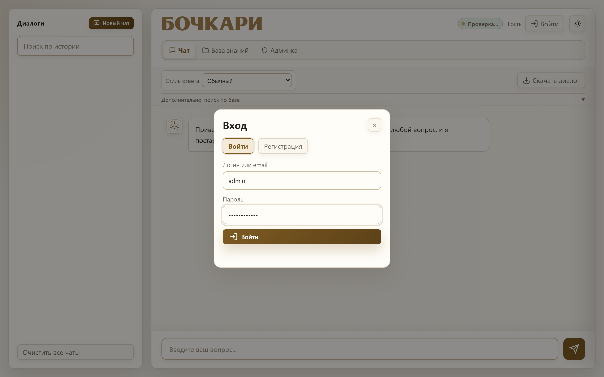
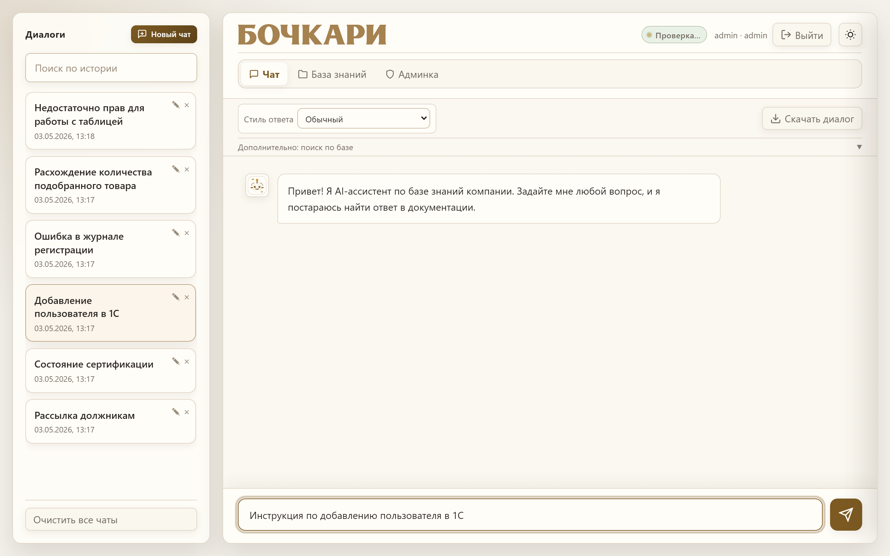
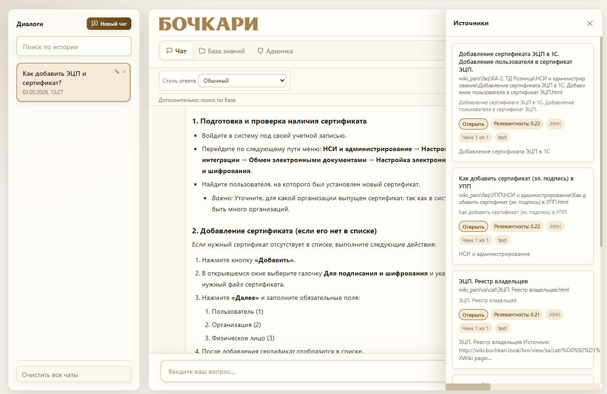
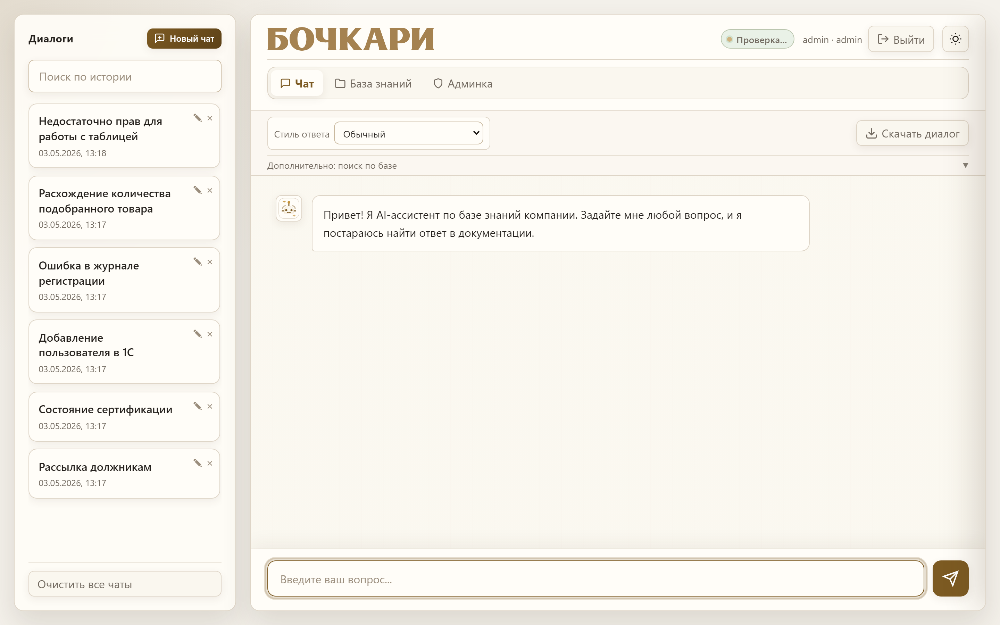
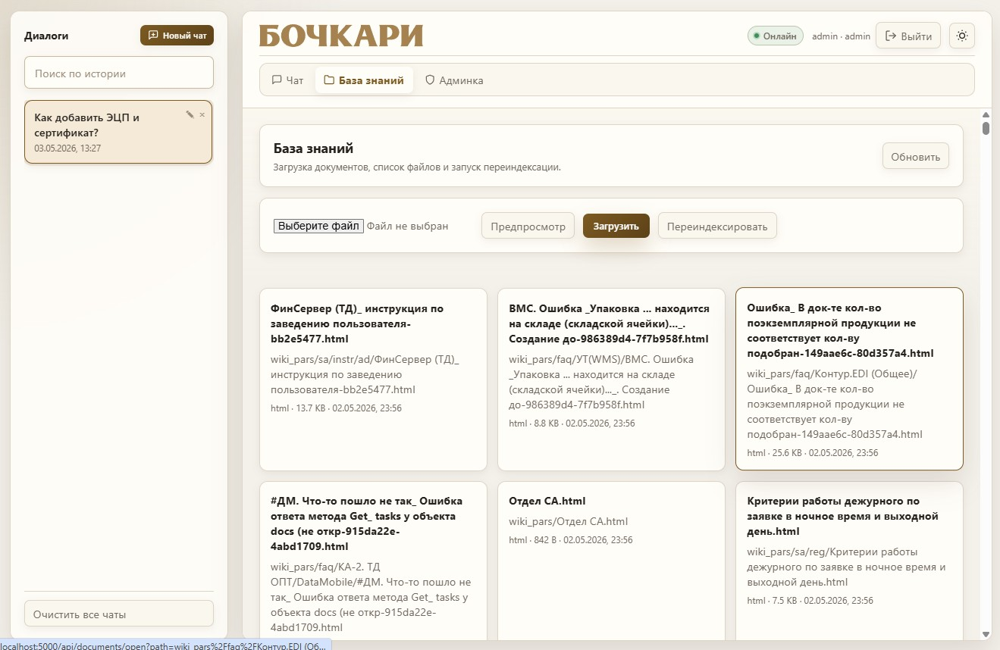
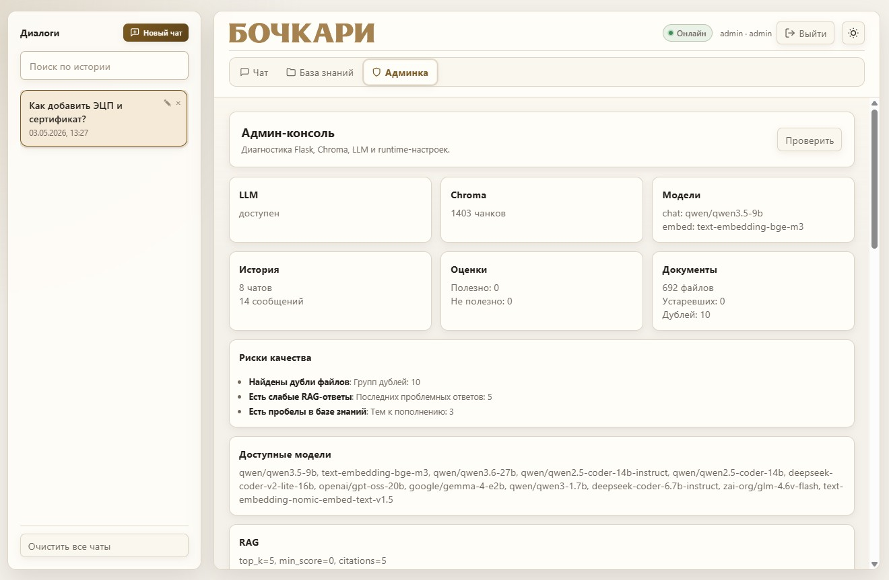

AI-ассистент по корпоративной базе знаний.
Один чат вместо десятка вкладок wiki.
Регламенты в XWiki, инструкции в DOCX, FAQ в чатах, скрипты в общих папках. Сотрудник тратит время на поиск ответа, который у нас уже задокументирован.
Сотрудник задаёт вопрос человеческим языком — система находит документы, показывает цитаты с релевантностью и формирует ответ. Всё локально.
Спрашиваем как человека: «как добавить пользователя в 1С?» — без ключевых слов и фильтров.
Каждый ответ — с источниками, цитатами и оценкой релевантности. Можно перейти прямо в документ.
Векторная база, LLM, документы — всё на наших серверах. Ничего не уходит в облако.
Разные домены — 1С, склад, маркетинг, эксплуатация. Одна точка входа.
flowchart LR
user["Сотрудник"] --> ui["Web UI
Flask + JS"]
ui --> rag["RAG ядро
core/rag.py"]
rag --> expand["Расширение запроса
rewrite, HyDE, multi-query"]
expand --> hybrid["Гибридный поиск"]
hybrid --> dense["ChromaDB
векторы"]
hybrid --> sparse["BM25
лексика"]
dense --> rrf["RRF + cross-encoder"]
sparse --> rrf
rrf --> llm["LLM
Ollama / LM Studio"]
llm --> ui
kb["База знаний
XWiki, PDF, DOCX, XLSX, HTML"] -.индексация.-> dense
kb -.индексация.-> sparse
Коротко: вы отправляете текст вопроса — дальше это уже не «разговор с интернетом». Система ищет ответы в ваших документах, собирает из них контекст и только затем просит языковую модель сформулировать ответ человеческим языком. Ниже — шаги по порядку.

user — чат и история, admin — плюс база знаний и диагностика.

Источники: справа выезжает панель с цитатами.


Одной технологии поиска недостаточно: кто-то формулирует как в регламенте, кто-то — своими словами. Запрос идёт двумя дорожками, результаты склеиваются — так мы не теряем ни точное слово, ни близкий по смыслу абзац. Ниже — цепочка шагов, коротко «кто за что отвечает», примеры и итог для модели.
«Ошибка в журнале регистрации» — BM25 цепляет дословно; если в wiki «просмотр событий», помогает поиск по смыслу.
«Рассылка должникам» vs «информирование о задолженности» в документе — смысл тянет нужный блок; BM25 подхватывает слова «должник», «рассылка», если они есть в тексте.
В промпт попадают лучшие отрывки из вашей базы после слияния поисков и (если включено) rerank — не «интернет из головы», а ваши документы.
.env: RETRIEVAL_MODE, RRF_K_CONSTANT, RERANK_ENABLED, RERANK_MODEL · core/retrieval.py
Документ нарезаем не «через каждые 500 символов», а по структуре: заголовки, списки, таблицы. К каждому чанку добавляем контекст раздела.
h1–h6, ul/ol, table.Heading*, таблицы по строкам.section_path, chunk_kind, путь раздела видно в источниках.Уточняющие вопросы «а для админа?» работают, потому что мы переписываем запрос с учётом истории, добавляем альтернативные формулировки и гипотетический ответ (HyDE).
retrieval_query_text) — можно отлаживать.
Запуск — python web_app.py или start.bat. Документация: README.md, docs/user_guide.md, docs/CHANGELOG_RAG_2026-05.md.
Вопросы?
Попробовать — http://localhost:5000
Инструкция пользователя — docs/user_guide.md
Один вопрос в чат — и ответ из ваших же регламентов и инструкций, а не полчаса поиска по папкам, wiki и переписке «кто-нибудь знает?». Попробуйте завтра на своём первом «типовом» вопросе — сэкономленное время останется вашим.